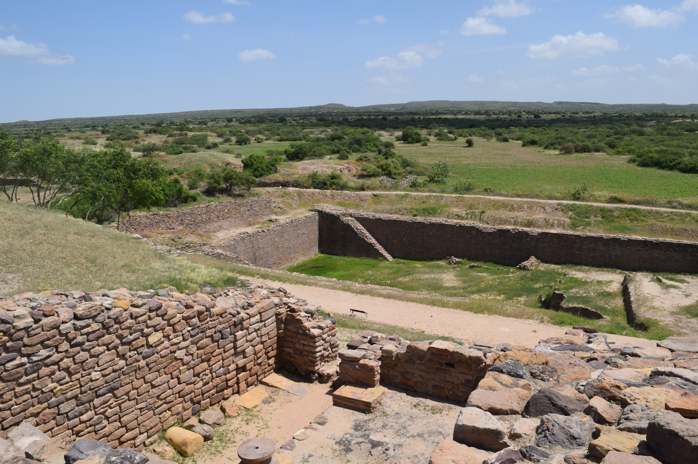

<div class="row container-fluid">
  
  <div class="col-xl-6">
    <p>
      The <b>Indus Valley Civilization</b> was an ancient civilization located
      in what is Pakistan and northwest India today, on the fertile flood plain
      of the Indus River and its vicinity. Evidence of religious practices in
      this area date back approximately to 5500 BCE. Farming settlements began
      around 4000 BCE and around 3000 BCE there appeared the first signs of
      urbanization. By 2600 BCE, dozens of towns and cities had been
      established, and between 2500 and 2000 BCE the Indus Valley Civilization
      was at its peak.
    </p>
    <p>
      Two cities, in particular, have been excavated at the sites of
      Mohenjo-Daro on the lower Indus, and at Harappa, further upstream. The
      evidence suggests they had a highly developed city life; many houses had
      wells and bathrooms as well as an elaborate underground drainage system.
      The social conditions of the citizens were comparable to those in Sumeria
      and superior to the contemporary Babylonians and Egyptians. These cities
      display a well-planned urbanization system.
    </p>
    <p>
      There is evidence of some level of contact between the Indus Valley
      Civilization and the Near East. Commercial, religious, and artistic
      connections have been recorded in Sumerian documents, where the Indus
      valley people are referred to as Meluhhaites and the Indus valley is
      called Meluhha.
    </p>
  </div>
</div>
